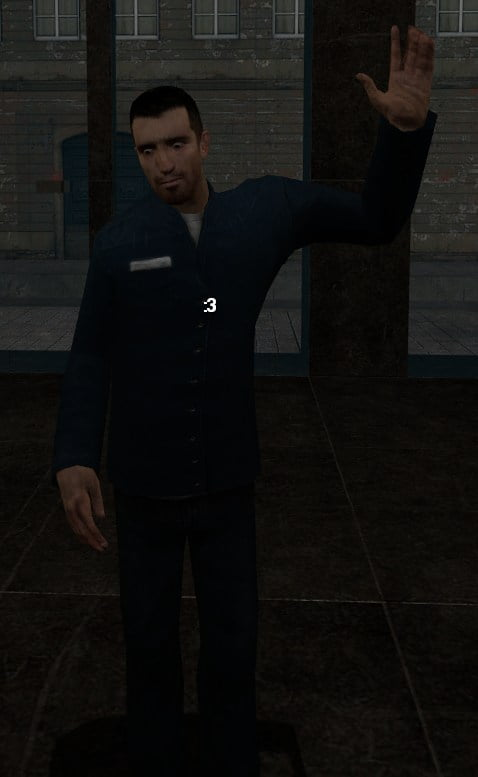

-
Re: Upgrade to PRW-2 Ign. Control Module (Power Transistor U
Same thing happened to me. I just cut and re-soldiered the wires. (See my other post above on page 4.)Sharpen047 wrote: Can anyone post pics on how to release the pin?
My contact just bends and doesnt release. spent about 30 mins 'gently' pulling the wire and theinsulation has pulled back and the metal inside is super soft.Black 1985 na/coupe brought back from the dead.
2000 frontier for work.
2004 PT Cruiser for gettin' grocery's. -
Re: Upgrade to PRW-2 Ign. Control Module (Power Transistor U
[quote]Dave-D wrote:Yeup much easier.Originally posted by Sharpen047My Build Thread -
Re: Upgrade to PRW-2 Ign. Control Module (Power Transistor U
[quote]862sik wrote: [quote=Dave-D]Cutting and resoldering the wires isnt much easier…it takes 10 seconds to pop the pins out of the Z31 PTU connector, then put them back in the right spots.Originally posted by Sharpen047- VG30DET (HE341) 86 300ZX - 1982 280ZX Turbo - Headered NA 1986 300ZX 2+2 - 2000 Xterra - -
Re: Upgrade to PRW-2 Ign. Control Module (Power Transistor U
cutting and soldering the wires is not easier at all. once you release one pin, you will change your mind. you just gotta do it right at least once.
real talk. -
Re: Upgrade to PRW-2 Ign. Control Module (Power Transistor U
Yet it still works.Black 1985 na/coupe brought back from the dead.
2000 frontier for work.
2004 PT Cruiser for gettin' grocery's. -
Re: Upgrade to PRW-2 Ign. Control Module (Power Transistor U
obviously it would work. no one disputed that.Dave-D wrote: Yet it still works.
it's just easier to swap pins than to heat up a soldering iron, cut back wiring, solder them properly, and put heatshrink or e-tape over them.
also when you solder a wire it becomes non flexible at that point. I hate that.
honestly using a safety pin or eye-glass repair screwdriver is the best thing to use, and i fucked with this connector for like 30 minutes until i just got a safety pin and it came out in 3 seconds.
there's nothing faster and easier, and soldering is totally unnecessary, and then if you ever want to change back, you gotta cut the wires again.
not cool. -
Re: Upgrade to PRW-2 Ign. Control Module (Power Transistor U
I had to destroy a similar unused connector to see how they came apart after that it was the quickest easiest upgrade I've ever done.Click here to view my Stanced VG33ET Build thread / Click here to view my Feed Back thread
-
Re: Upgrade to PRW-2 Ign. Control Module (Power Transistor U
[quote]Careless wrote:First off we can agree both ways work.Originally posted by Dave-D
Just like Sharpen 047, I also fucked with the connector for about 30 minutes and was unsuccessful at releasing the pin. And I used several sizes of small screwdrivers,pins, finishing nails, ect. and pried in as many directions…(I was unsure as to which direction you specified in your write up.) So before I accidentally forced something and possibly broke it (which would require either a run to the JY or an auto parts store) I simply changed my tactics and broke out the soldering iron and finished the project.
I'm not a Professional Mechanic ok, but do have over 30 years of experience around cars. I'm not saying my ideas are correct or even the best way of adapting the plug but it is just ANOTHER way of doing it. I can see why your method is better, however there is nothing unsafe or dangerous in my alternate solution.
In the year I have owned my Z I have pretty much brought it back from the dead. Thanks to you guys here on Z31P. 8)Black 1985 na/coupe brought back from the dead.
2000 frontier for work.
2004 PT Cruiser for gettin' grocery's. -
Re: Upgrade to PRW-2 Ign. Control Module (Power Transistor U
Yeah i ended up destroying the pin inside and now it slides back inside about 4mm and stops. its just thrashed. ive used pins screwdrivers safety pins small drill bits and even almost pulled the wire out of the head itself. nothing is working. i just want to see the connector when its out so i can make sure im doing it correctly.
i could solder it but id rather keep the harness intact. i can fix the pin when i get it out, but i cant get it out and right now dont have a car to drive.
Figured it would be "easy" enough to try and fix my code 21, possibly.
EDIT: ok got it. apparently someone has tried to change it before since mine was already messed up. but i got it by removing the back rubber piece and pushing the clip up.
only one pin was like that the other was easy.
FYI guys, the clip is plastic not metal. -
Re: Upgrade to PRW-2 Ign. Control Module (Power Transistor U
I've done this pin swapping for years, the nissan connectors are some of the easiest as you have next to no chance of screwing up the pins, only breaking the tabs like some people found out
SOME connectors have a retainer clip in the back that pops off, others slide out, whatever, the rubber grommet will not hold the wire in place so ignore it, all you need is a big needle to lift the tab away from the pin, but keep in mind the tab has a U shaped end, so push the wire at the back towards you before lifting the pin -
Re: Upgrade to PRW-2 Ign. Control Module (Power Transistor U
THIS might be the critical piece of information that help those of us that have never done this before. I was only pulling gently. :bangheadG-E wrote: I've done this pin swapping for years, the nissan connectors are some of the easiest as you have next to no chance of screwing up the pins, only breaking the tabs like some people found out
SOME connectors have a retainer clip in the back that pops off, others slide out, whatever, the rubber grommet will not hold the wire in place so ignore it, all you need is a big needle to lift the tab away from the pin, but keep in mind the tab has a U shaped end, so push the wire at the back towards you before lifting the pinBlack 1985 na/coupe brought back from the dead.
2000 frontier for work.
2004 PT Cruiser for gettin' grocery's. -
Re: Upgrade to PRW-2 Ign. Control Module (Power Transistor U
Haha yea, you lift the retainer gently and it won't break, something you can't do if it's still grabbing, I guess you got it now?Dave-D wrote: THIS might be the critical piece of information that help those of us that have never done this before. I was only pulling gently. :banghead
-
Re: Upgrade to PRW-2 Ign. Control Module (Power Transistor U
[quote]Dave-D wrote:THIS might be the critical piece of information that help those of us that have never done this before. I was only pulling gently. :banghead[/quote:3rlkp0l4]Originally posted by G-E:3rlkp0l4
yeah that might of helped me too ha i mangled my clip before i said fuck it and soldered it i was soldering stuff anyways so it wasnt a huge deal would of just looked cleaner to swap pins but after a hour of trying i said forget it.86 NA
87 Turbo
Member of the "zetto sun-ichi" group
Local MN car forum/club anyone welcome..... fivezeroseven.net join! -
Re: Upgrade to PRW-2 Ign. Control Module (Power Transistor U
Okay, so, I have a really dumb question. Not worried about pin removal, I work on guitar amps all the time so I'm used to funny pins. However, I have to ask about this goddamn yellow retaining clip that backs up the pins. What is the trick to this thing? :lol:
I don't want to just bust it off, and after fucking with it for ten minutes I am considering soldering the wires too (see comment re: guitar amps; actually, I am considering mini-spade connectors so I can A/B the two units rather than relying on the placebo effect!) There must be something I am missing here. It looks like you are supposed to compress the tabs on the "other" side in relation to this pic, and pull it out "this" side, but I can't get it to go. Am I just an idiot?

-
Re: Upgrade to PRW-2 Ign. Control Module (Power Transistor U
I made this for another thread a long time ago.
How to de-pin a Sumitomo/Yazaki connector:
After removing the strain relief, insert pin here:

and pry up.
Older connectors have a strain relief that when pried, slides out from the side (not the top as shown, its fucking animated, cut a brutha some slack)
Newer ones, when pried, pop out the rear of the connector.
84 AE/Shiro #683/Shiro #820/84 Turbo

Copyright © 2006–. All rights reserved. Privacy Policy